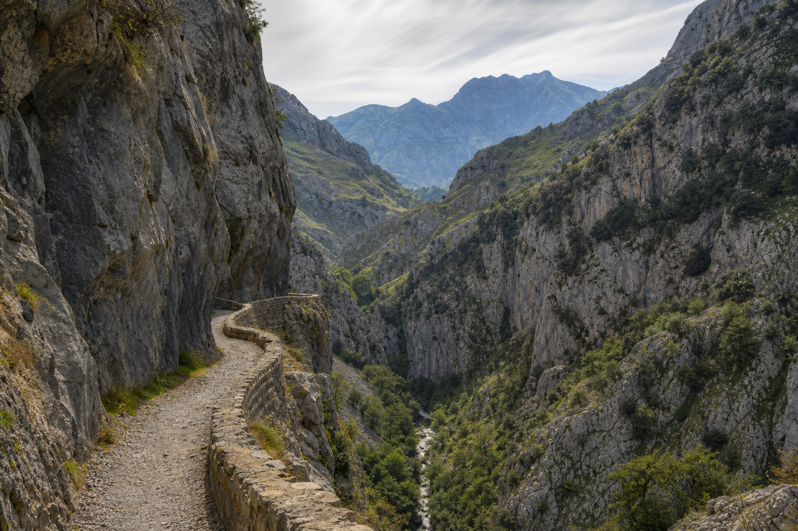

← Volver a excursiones

Una ruta sin preocuparte del coche
Coordinamos la recogida en tu alojamiento, el traslado al punto de inicio y el regreso desde el final de la ruta. La hora y el punto exactos se confirman al reservar.
Información de la ruta
- Distancia habitual: unos 12 km por trayecto
- Dificultad: media
- Duración estimada: 3–4 horas
El servicio puede incluir
- Recogida en tu alojamiento
- Traslado al inicio
- Recogida al finalizar
- Horario coordinado contigo
Antes de salir
Recomendamos calzado adecuado, agua, algo de comida y protección solar. Consulta las condiciones meteorológicas y el estado de la ruta.
Precio y disponibilidad bajo consulta. Te lo confirmamos antes de reservar.